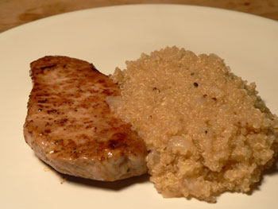
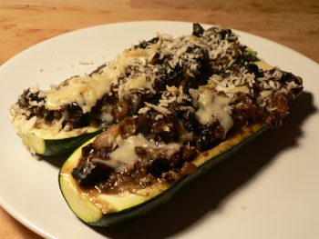
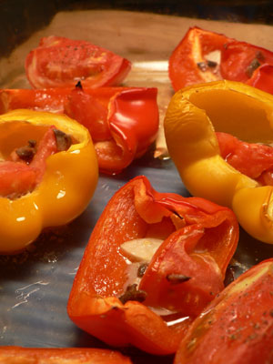

Catch-up weblogging

This is catch-up blogging on a few tasty dinners I made in the last week that didn’t merit their own posts. What with my health problems and all, I am trying to eat more whole grains. To that end, last week I accompanied pan-fried Berkshire pork medallions with a quinoa pilaf (above).
I enjoy the taste and texture of quinoa, but I find it takes a supreme effort to wash it. It goes right through my strainer, and with cheesecloth or a napkin it’s too messy. What does everyone else use? A tiny strainer with a handle and a very fine mesh? Doesn’t it still get stuck in the holes? Please advise, and do it soon—the clock in my heart is ticking.

On Sunday night, I made zuccanoes from the beautiful Moosewood Cookbook, one of Emily B’s favorite meals. I’ve made better versions in my life, and you can put whatever you want in here as long as it involves egg and cheese. Once I loaded it them with mushrooms, onions, and chicken-apple sausage to great applause. This time I used mushrooms, gruyère, onion, thyme, and panko, but it was insipid and dry (although Nathan raved).

Tonight, as part of my education on Elizabeth David, whose book, South Wind Through the Kitchen I am currently enjoying, I made peperoni alla piemontese, which sounded better than it turned out. I liked the idea of stuffing peppers with butter, olive oil, anchovies, tomatoes, and garlic, but the finished product tasted mostly like peppers. Other recipes I found online had you purée the stuffing before putting it in the peppers, which might make a difference.
Either way, Elizabeth is hilarious, and she reminds me of dear old M.F.K. Fisher in her class and wit. I wish that the food writers from previous generations were here blogging with us today. Can you imagine if M.F.K. or James Beard had a digital camera and a blog? Or if Joseph Wechsberg and A.J. Liebling could have documented their culinary adventures online as they happened? At least we have plenty of their books to read, but blogs are so much more personal and unedited. I guess it’s up to us to leave something memorable for the next generation. Thank goodness my mom is here to help!
Add a comment